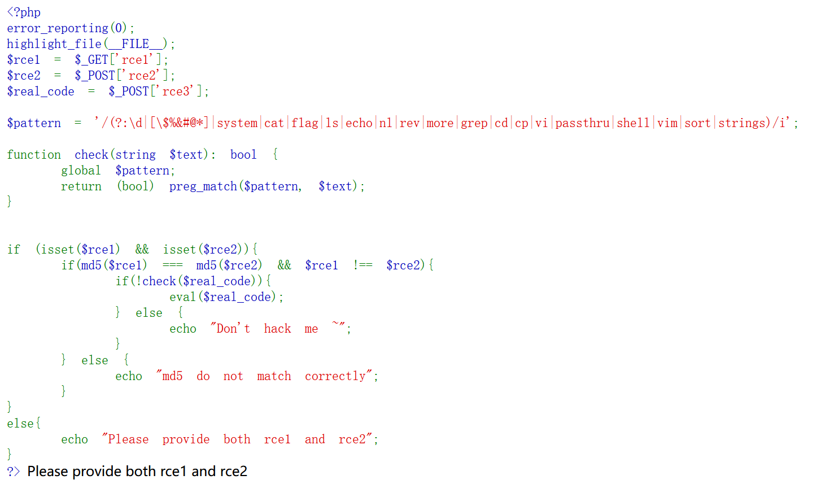
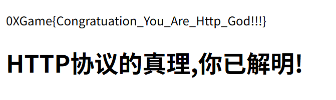
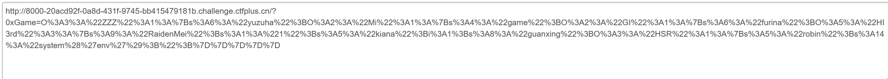
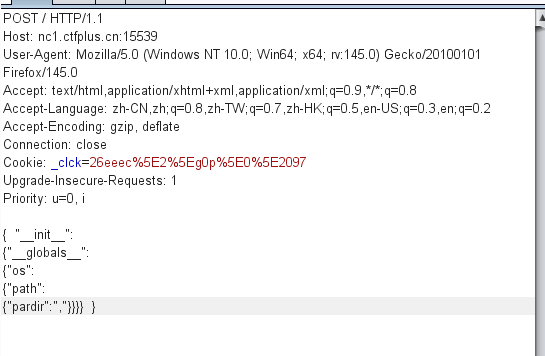

0xGame week1 web wp
[TOC]
1.Lemon
打开链接后发现只有一句话的内容，这时候先查看网页（客户端）源代码，有些信息可能是以注释的形式存在于源代码中，而不会在页面端显示，一般打开源代码的方式有f12，右键寻找源代码键，以及Ctrl + U（windows/linux系统），mac系统是Command + Option + U，但发现f12和右键被禁用了


但是Ctrl + U依旧有效，得到flag

2.RCE
打开页面得到一串PHP代码
接下来审计代码
1 | error_reporting(0); |
关闭所有PHP错误、警告和通知信息的输出。
（高亮文件内容（在这里显示的就是这里的PHP代码内容）[“FILE_”是PHP中的魔术常量，代表着当前文件的完整路径和文件名，如果这个文件所在服务器的路径是/var/www/html/index.php的话，那么这个魔术常量的值就是这个。这个魔术常量的作用又由highlight_file()函数体现出来，这个函数可以接收一个文件名作为参数，可以读取这个文件内容，并将其中的源代码以语法高亮的HTML格式输出到浏览器]）
1 | $rce1 = $_GET['rce1']; |
分别用GET和POST方法获取rce1 （rce2，real_code）并赋值给rce1，rce2，real_code。GET请求和POST请求是HTTP协议里的内容
（GET请求是从Web服务器指定的资源中获取一个资源数据，本质上是“只读”作用不会对服务器上的数据做出修改，通常的格式是在URL后面以?变量名=value的形式写入，如果要GET多个变量要以&连接
POST请求则是向Web服务器中指定的资源提交要被处理的数据，通常会导致服务器状态变化，POST请求的参数是放在HTTP请求的消息体中发送的。（一般会借助Hackbar，burp suite等工具发送））
更多的HTTP内容[点击这里](HTTP 概述 - HTTP | MDN)查看
1 | $pattern = '/(?:\d|[\$%&#@*] |
首先这里定义了一个正则表达式模式，用于匹配被选中的项，正则表达式从/开始，以/结束(?: )中的内容就是会被匹配的项,之间以”|“分隔，在这里的意思是，会匹配: \d:0-9的所有数字 []中的$%&#@*，不过这里的$前面有个\，对$进行了转义（目的是防止其匹配以$结尾的字符串，这里只是单纯想匹配$这个字符）
以及system|cat|flag|ls|echo|nl|rev|more|grep|cd|cp|vi|passthru|shell|vim|sort|strings这一系列字符串（不包括|）
这里/后面的i表示不区分大小写，所以通过大小字母的形式绕过匹配检测。
function check(string $text): 这边定义了一个函数，用于正则匹配是否含有被匹配的内容，这里的bool即表示这个函数会返回一个布尔值（true(1) or false(0)），如果text内容里没有匹配的内容则会返回0，成功绕过了检测，
这里的global $pattern;是告知PHP $pattern是已经在外部定义过了的全局变量。
1 | if (isset($rce1) && isset($rce2)){ |
if (isset($rce1) && isset($rce2))这里检测rce1和rce2是否被赋值且不为空值，成功则进入下一个语句，失败则echo “Please provide both rce1 and rce2”
md5($rce1) === md5($rce2) && $rce1 !== $rce2，这里要求rce1和rce2的不完全相等（!==是===的完全取否，如果===不成立，那么!==就会成立，所以可以令rce=1，rce2=“1”），但它们的md5值相同（那么之前的方法就在这里不成立了，数字的md5值与字符串的md5值并不相等），所以这里是个很矛盾的点，但是由于php中的md5（）函数无法处理数组当md5（）函数处理数组时会返回NULL，这就会使NULL==NULL使得表达式成立。由于我们在使用GET和POST请求获取和传输数据时，?rce1[]=a会告诉PHP不要把a当作普通变量处理，而是创造一个数组，并将a放进去，这样rce1=array(“a”)这样就满足了代码要求。
对于if(!check($real_code)),!是取反的意思，因为上述说如果匹配到了字符则会返回1值但这里由于有!则会返回0，不满足if的条件要求，则不会执行
eval（）函数。那么在这里我们就知道了，我们要满足一系列要求，并且$real_code中需要填写的是需要执行的命令函数，且需要绕过一些内容。
给出payload：用hackbar 在网页URL后面加上/?rce1[]=a
在POST消息体中传输rce2[]=b&rce3=print(‘tac /f???’) /或者可以用.进行字符串连接。
3.Http的真理，我已解明
根据要求依次完成即可：1. url/?hello=web 2.POST :http=good 3.cookie:Sean=god 4. User-Agent：Safari 5.Referer:www.mihoyo.com 6. Via：clash
4.Rubbish_Unser
1 | error_reporting(0); highlight_file(__FILE__); |
这题是一道php反序列化的题目，需要找出构造出POP链来执行最终指令，所以现在要找到一头一尾
class HSR
{
public $robin;
function __get($robin)
{
$castorice = $this -> robin;
eval($castorice);
}
注意到这里又eval执行函数，所以这里就是我们最后要执行指令的地方。而在ZZZ类中
function __destruct()
{
echo “破绽，在这里！” . $this -> yuzuha;
}
__destruct这是PHP中的一个魔术方法，当有一个对象被销毁时，PHP会自动调用该方法。
一般在建立 POP链的时候都是反顺序寻找的，在最终选用的类中有一个______get()魔术方法，它需要通过访问不存在的属性从而实现调用，全局只有Elysia是未被定义的属性，而在该类下的魔术方法是___invoke(),当一个对象被当作函数调用时会触发，明显这里的furina被当作函数执行了。
__call()是当访问不存在的函数时，会自动调用的一个魔术方法，而在类Mi中有一个没有被定义的tks()函数
而在该类里有一个__toString()函数，当有对象被当作字符串使用时会自动调用这个函数，在类ZZZ中有一个echo “破绽，在这里！” . $this -> yuzuha; (PHP中”.”有着连接字符/字符串的作用)所以这里yuzuha被当作字符串处理了,而这里也是我们所建立的POP链的起点所以整条链也就清晰了
__destruct()—–>
__toString()—–>
__call()—–>
__invoke()—–>
__get()—–>
eval
然后大体的链已经可以之间创建了有一个需要进行判断
1 | if($this -> kiana !== $this -> RaidenMei && |
kiana和RaidenMei不相等，但他们的md5和sha1值相等，这里依旧使用1和“1”进行验证就行了
因此给出exp
1 |
|
并将url编码后的payload用GET方式传输

5.留言板（粉）
首先是登录界面，简单用burp suite爆破后得到账号密码
账号：admin 密码：admin123

由标题知这里存在XXE漏洞
直接构造payload
]>
“”作用是创造一个XML类型，a是[]根元素名称
”<!ENTITY xxe SYSTEM "file:///flag">“是在定义一个名为xxe的外部实例
并用file:///flag来获取读取/flag文件
“<msg>&xxe;</msg>”
创建msg元素，尝试将/flag文件内容放入到&xxe中
send过去得到flag

6.Lemon_RevEnge
首先看一下题目给的附件（是个python文件）
源代码如下
1 | from flask import Flask,request,render_template |
首先看到了这一部分
1 |
|
说明这题的路径是去访问一个路径再加上页面中的内容提示：

但是得到了Not Found的访问，既然页面提示说了flag在/flag中（勉强再相信一次），看看有没有可能/flag在某个父目录（上层目录）里面，尝试访问/../flag or /../../flag等等，都是回复的Not Found 😫。
在经过寻找后，发现不管我跳出了多少目录，最后访问的依旧还是/flag😨.那么现在再看页面就没的多少信息了，回头再看下源代码
1 | class Dst(): |
这里创造了一个Game0x实例，并且有着_init__方法，
@app.route(‘/‘,methods=[‘POST’, ‘GET’])这里是Flask Web框架中的路由装饰器，这里支持GET,POST方法获取消息体中的内容进行函数装饰，merge(json.loads(request.data), Game0x)，看到这个就知道题目要求上传一个JSON内容并且这里调用了merge( )函数，回到上面的部分
1 | def merge(src, dst): |
然后进行然后分别对scr（用户上传的JSON内容经过转换后变成了Python字典），以及dst（Game0x实例）进行键值对的检查,到最后我们要达到这一目的 setattr(dst, k, v) ，再想到改题目会把/../../../../给变成/（网上查看了一下，可能是os.path.exists()函数执行时同时执行了normpath方法，而这个方法会规范化path路径，才导致了这个结果），再看到官方payload是这个
1 | { "__init__":{"__globals__":{"os":{"path":{"pardir":","}}}}} |
这里到最后会形成访问链：
Game0x.init.globals[“os”].path 然后再将path中的pardir属性改成“，”这样最后系统就会将要规范化的字符换了目标本来是要规范/../，现在要规范/,/ 这就可以保证我们可以正常浏览/../类的网页了。后面使用burp suite进行POST,GET请求。（因为我在尝试使用Hackbar传输的时候，总是出现一些错误👀）
(先POSTJSON内容，再GET所需路径)
